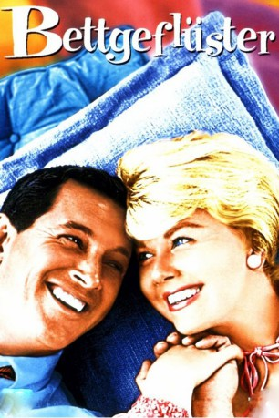

Auszeichnungen: 1 Oscars gewonnen für 4 Oscars nominiert
 gesehen am 25.07.2017
gesehen am 25.07.2017Alternativ: Pillow Talk
Auszeichnungen: 1 Oscars gewonnen für 4 Oscars nominiert gesehen am 25.07.2017
 
 IMDB-Wertung: 7.5 / 10
IMDB-Wertung: 7.5 / 10  Metascore:
Metascore: 
Innenarchitektin Jan Morrow und Songwriter Brad Allen teilen sich einen Telefonanschluss. Die ausufernd amourösen Telefonate des aggressiven Playboys nerven Jan, die sich mit ihm heftig zankt. Als sie sich persönlich kennen lernen, gibt er sich als texanischer Cowboy auf Besuch in New York aus, spielt den naiven Naturburschen. Jan wundert sich, dass er sie nicht zu verführen sucht. Sie entdeckt seine Maskerade. Brad beauftragt sie, seine Wohnung einzurichten. Jan rächt sich mit geschmacklosem Interieur. Aber sie landen glücklich im Hafen der Ehe.
Jahr: 1959
Dauer: 102 Minuten
FSK: 6
Land: USA Studio: A Universal-International ReleaseTonspuren:
Untertitel: Deutsch,
Auflösung: 1080p (1920x816) Größe: 8130 MB
Regisseur:  Michael Gordon
Michael Gordon
Drehbuch: Stanley Shapiro, Maurice Richlin, Russell Rouse, Clarence Greene
Soundtrack: Frank De Vol
Darsteller:
 Rock Hudson als Brad Allen
Rock Hudson als Brad Allen Doris Day als Jan Morrow
Doris Day als Jan Morrow Tony Randall als Jonathan Forbes
Tony Randall als Jonathan Forbes Thelma Ritter als Alma
Thelma Ritter als Alma Allen Jenkins als Harry
Allen Jenkins als Harry Marcel Dalio als Pierot
Marcel Dalio als Pierot Hayden Rorke als Mr. Conrad
Hayden Rorke als Mr. Conrad William Schallert als Hotel Clerk
William Schallert als Hotel Clerk Don Beddoe als Mr. Walters , scenes deleted
Don Beddoe als Mr. Walters , scenes deleted Franklyn Farnum als Nightclub Patron , uncredited
Franklyn Farnum als Nightclub Patron , uncredited Alex Gerry als Dr. Maxwell
Alex Gerry als Dr. Maxwell John Indrisano als Truck Driver Punching Jonathan , uncredited
John Indrisano als Truck Driver Punching Jonathan , uncredited Kenner G. Kemp als Man at Piano Bar , uncredited
Kenner G. Kemp als Man at Piano Bar , uncredited William H. O'Brien als Nightclub Waiter , uncredited
William H. O'Brien als Nightclub Waiter , uncredited Eddie Parker als Doorman , uncredited
Eddie Parker als Doorman , uncredited Jeffrey Sayre als Nightclub Patron , uncredited
Jeffrey Sayre als Nightclub Patron , uncredited Harry Tyler als Coachman , uncredited
Harry Tyler als Coachman , uncreditedDatei: X:\1950-1959\Bettgeflüster (1959, FSK6, 1920x816).mkv seit 30.11.2015
Festplatte: HD 1900-1970
 Es gibt insgesamt 141 Filme in der Gruppe '1950-1959'
Es gibt insgesamt 141 Filme in der Gruppe '1950-1959'